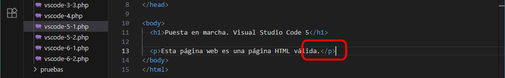
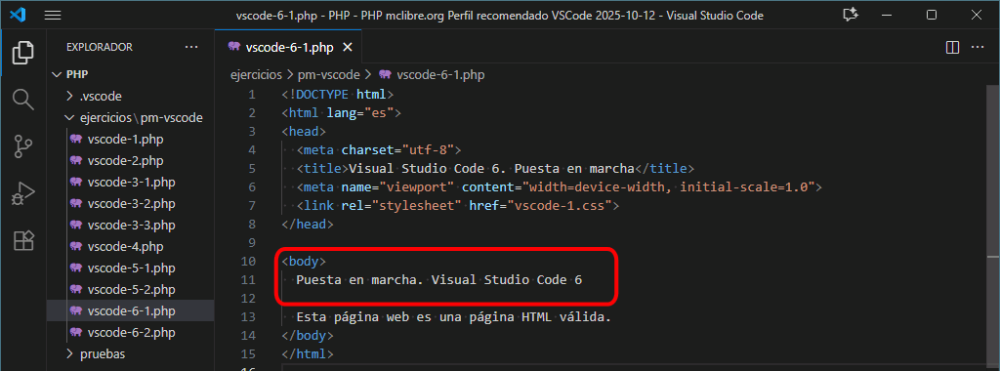
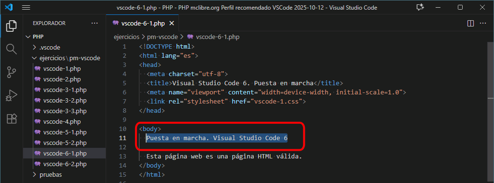
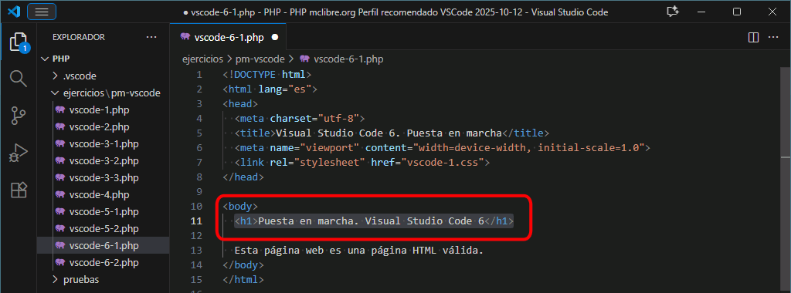
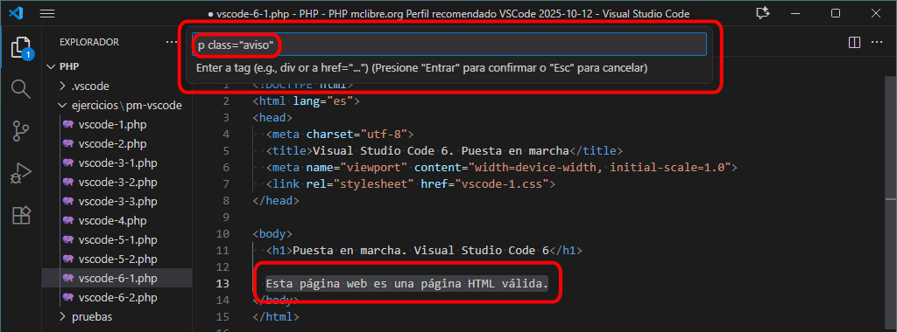

El archivo comprimido de las plantillas contiene siempre una carpeta comprimida por lo que no hace falta descomprimirlo dentro de una carpeta. El nombre de la carpeta sigue siempre el mismo patrón XX-YYYY-plantillas, donde XX es un acrónimo (pm = ejercicios puesta en marcha, sf = ejercicios sin formularios, cf = ejercicios con formularios, cs = ejercicios con sesiones, fb = ejercicios de funciones y bibliotecas, etc.) e YYYY hace referencia al grupo de ejercicios. Se aconseja borrar del nombre de la carpeta la parte final (-plantillas).
Abra Visual Studio Code eligiendo como área de trabajo la carpeta PHP, de acuerdo con la lección Configuración recomendada.
Compruebe que la carpeta ejercicios/pm-vscode contiene diez programas.
Compruebe el funcionamiento de los cuatro atajos de teclado de navegación entre paneles.
Cierre y/o oculte todas las ventanas.
Ventana de Explorador de archivos
Pulse el atajo de teclado Ctrl+Alt+/ (la tecla / es la del teclado numérico). Compruebe que se abre y mueve el foco a la ventana del Explorador de archivos si el Explorador de archivos no estaba visible. Compruebe que se oculta la ventana del Explorador de archivos si el Explorador de archivos estaba visible.
Una vez abierto el Explorador de archivos, compruebe que puede desplazarse por los directorios con las flechas de desplazamiento, que puede abrir y cerrar directorios con Intro y que puede abrir ficheros con Intro. El cursor se colocará al principio del documento o en el punto en que se encontrara la última vez.
Ventana de Panel
Pulse el atajo de teclado Ctrl+Alt+* (la tecla * es la del teclado numérico). Compruebe que se abre y mueve el foco a la pestaña Problemas del Panel si el Panel no estaba visible. Compruebe que se oculta el Panel si el Panel estaba visible.
Si la página no contiene errores de sintaxis, no se mostrarán errores:
Si la página contiene errores de sintaxis, se mostrará generalmente uno (el primero que encuentre el análisis sintáctico). En este caso falta el punto y coma final de la instrucción:
Pulse el atajo de teclado Ctrl+Alt++ (la tecla + es la del teclado numérico). Compruebe que se abre y mueve el foco a la pestaña Terminal del Panel si el Panel no estaba visible. Compruebe que se oculta el Panel si el Panel estaba visible.
Ventana del editor
Pulse el atajo de teclado Ctrl+Alt+- (la tecla - es la del teclado numérico). Compruebe que el foco se desplaza a la ventana del Editor si el foco se encuentra en otra ventana.
Compruebe que puede desplazarse con los cuatro atajos de una ventana a otra.
VS Code 2 - Ejecutar programas
Descargue y descomprima las plantillas en la carpeta /ejercicios.
Abra en Visual Studio Code el programa /ejercicios/pm-vscode/vscode-2.php.
Ejecute el programa vscode-2.php con los atajos de teclado Ctrl+Alt+l Ctrl+Alt+f (para abrir en Firefox) y Ctrl+Alt+l Ctrl+Alt+c (para abrir en Chrome) y compruebe que la página se muestra tanto en Firefox como en Chrome.
Si no se abre el navegador correspondiente, compruebe que está seleccionado el perfil recomendado y que el perfil está configurado correctamente, como se explica en la lección Perfil recomendado de Visual Studio Code.
Compruebe que la dirección de la página es http://localhost/iaw/php/ejercicios/pm-vscode/vscode-2.php.
Si la dirección no contiene el alias /iaw/php, revise la tarea creada en Visual Studio Code, como se explica en la lección Configuración de Visual Studio Code.
El resultado en el navegador debe ser este:
Si la página no se muestra por un error del servidor, compruebe que ha creado el alias /iaw/php en el archivo de configuración de Apache httpd.conf y reinicie el servidor, como se explica en la lección Configuración de Apache y PHP.
VS Code 3 - Probar mclibre.org Snippets
Atajo Ctrl+Alt+v Ctrl+Alt+l
Abra en Visual Studio Code el programa /ejercicios/pm-vscode/vscode-3-1.php.
Copie el texto html siguiente:
<!DOCTYPE html>
<html lang="es">
<head>
<meta charset="utf-8">
<title>Página HTML válida</title>
<meta name="viewport" content="width=device-width, initial-scale=1.0">
<link rel="stylesheet" href="estilo.css" title="Color">
</head>
<body>
<p>Esta página es una página HTML válida.</p>
</body>
</html>
Pegue en el interior del fragmento PHP el texto, utilizando el atajo Ctrl+Alt+v Ctrl+Alt+l
Compruebe que el código html se ha pegado dentro de instrucciones print, línea a línea.
Ejecute el programa.
Compruebe que se muestra la página correctamente.
Atajo Ctrl+Alt+v Ctrl+Alt+b
Abra en Visual Studio Code el programa /ejercicios/pm-vscode/vscode-3-2.php.
Copie el texto html siguiente:
<!DOCTYPE html>
<html lang="es">
<head>
<meta charset="utf-8">
<title>Página HTML válida</title>
<meta name="viewport" content="width=device-width, initial-scale=1.0">
<link rel="stylesheet" href="estilo.css" title="Color">
</head>
<body>
<p>Esta página es una página HTML válida.</p>
</body>
</html>
Pegue en el interior del fragmento PHP el texto, utilizando el atajo Ctrl+Alt+v Ctrl+Alt+b
Compruebe que el código html se ha pegado dentro de una única instrucción print.
Ejecute el programa.
Compruebe que se muestra la página correctamente.
Atajo Ctrl+Alt+v Ctrl+Alt+q
Abra en Visual Studio Code el programa /ejercicios/pm-vscode/vscode-3-3.php.
Pegue en la posición adecuada el texto, utilizando el atajo Ctrl+Alt+v Ctrl+Alt+q
Compruebe que el código html se ha pegado añadiendo caracteres de escape (\) a las comillas.
Ejecute el programa.
Compruebe que se muestra la página correctamente.
VS Code 4 - Formatear programas
Abra en Visual Studio Code el programa /ejercicios/pm-vscode/vscode-4.php.:
<?
/*
Programa de prueba de PHP CS Fixer
*/
$a = 25 ;
$b = $a + $a*2 ;
Formatee con PHP CS Fixer el programa vscode-2.php con el atajo de teclado Alt+Mayús+f.
Compruebe que el programa se formatea correctamente:
<?php
// Programa de prueba de PHP CS Fixer
$a = 25;
$b = $a + $a * 2;
Si el programa no se formatea correctamente, compruebe que está seleccionado el perfil recomendado y que el perfil está configurado correctamente, como se explica en la lección Perfil recomendado de Visual Studio Code.
Si está utilizando Windows y el nombre de usuario contiene espacios en blanco, actualmente (octubre de 2025) la extensión PHP CS Fixer no funciona correctamente. Una posible solución es utilizar una versión anterior de la extensión que sí funciona correctamente, como se comenta en la lección Perfil recomendado de Visual Studio Code.
No es necesario ejecutar el programa, ya que no proporciona ninguna salida.
VS Code 5 - Extensión Close HTML/XML Tag
Cerrar etiquetas en fragmentos HTML
Abra en Visual Studio Code la página vscode-5-1.html.
Compruebe que falta una etiqueta de cierre en un párrafo.
Sitúe el cursor en la posición de la etiqueta de cierre faltante.
Corrija el error pulsando el atajo de teclado Alt+. (punto). Compruebe que se añade el cierre de la etiqueta </p>.

Cerrar etiquetas en fragmentos PHP
Abra en Visual Studio Code la página vscode-5-2.html.
Compruebe que falta una etiqueta de cierre en un párrafo.
Sitúe el cursor en la posición de la etiqueta de cierre faltante.
Corrija el error pulsando el atajo de teclado Alt+. (punto). Compruebe que se añade el cierre de la etiqueta </p>.
VS Code 6 - Extensión Tag Inserter mclibre fork
Añadir etiquetas en fragmento HTML
Abra en Visual Studio Code la página vscode-6-1.php.
Compruebe que el texto de la línea 11 no está rodeado de etiquetas (sin contar las etiquetas <html> o <body>).

Seleccione el texto de la línea 11 (únicamente el texto, sin los espacios iniciales de la línea ni el salto de línea final).

Pulse el atajo de teclado Alt+Mayús+i. Compruebe que se abre un cuadro de texto en la parte superior, escriba únicamente el nombre de la etiqueta, por ejemplo h1, y pulse Intro.
Compruebe que el texto de la línea 11 está rodeado de etiquetas <h1>.

Si se quiere añadir una etiqueta con atributos en un fragmento HTML, el procedimiento sería el mismo pero escribiendo los atributos en el cuadro de texto:

Compruebe que el texto de la línea 13 está rodeado de la etiqueta <pclass="aviso">.
Añadir etiquetas en fragmento PHP
Abra en Visual Studio Code la página vscode-6-2.php.
Compruebe que el texto de la línea 13 no está rodeado de etiquetas (sin contar las etiquetas <html> o <body>).
Seleccione el texto de la línea 13 (únicamente el texto, sin los espacios iniciales de la línea ni el salto de línea final).
Pulse el atajo de teclado Alt+Mayús+i. Compruebe que se abre un cuadro de texto en la parte superior, escriba únicamente el nombre de la etiqueta, por ejemplo h1, y pulse Intro.
Compruebe que el texto de la línea 13 está rodeado de etiquetas <h1>.
Si se quiere añadir una etiqueta con atributos en un fragmento HTML, el procedimiento sería el mismo pero escribiendo los atributos en el cuadro de texto. Como el texto se va a insertar en una cadena delimitada con comillas dobles, hay que escribir contrabarras (\) antes de las comillas dobles:
Compruebe que el texto de la línea 13 está rodeado de la etiqueta <pclass=\"aviso\">.
 El archivo comprimido de las plantillas contiene siempre una carpeta comprimida por lo que no hace falta descomprimirlo dentro de una carpeta. El nombre de la carpeta sigue siempre el mismo patrón XX-YYYY-plantillas, donde XX es un acrónimo (pm = ejercicios puesta en marcha, sf = ejercicios sin formularios, cf = ejercicios con formularios, cs = ejercicios con sesiones, fb = ejercicios de funciones y bibliotecas, etc.) e YYYY hace referencia al grupo de ejercicios. Se aconseja borrar del nombre de la carpeta la parte final (-plantillas).
El archivo comprimido de las plantillas contiene siempre una carpeta comprimida por lo que no hace falta descomprimirlo dentro de una carpeta. El nombre de la carpeta sigue siempre el mismo patrón XX-YYYY-plantillas, donde XX es un acrónimo (pm = ejercicios puesta en marcha, sf = ejercicios sin formularios, cf = ejercicios con formularios, cs = ejercicios con sesiones, fb = ejercicios de funciones y bibliotecas, etc.) e YYYY hace referencia al grupo de ejercicios. Se aconseja borrar del nombre de la carpeta la parte final (-plantillas).